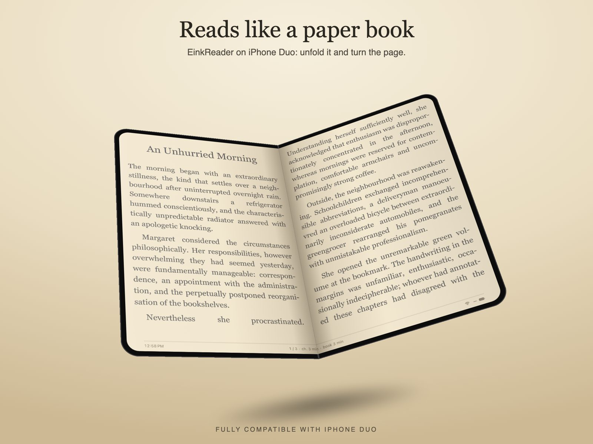

EinkReader
An e-book reader for EPUB and FB2 with the soft, paper-like look of an e-ink screen. No ads.

Android
iPhone and iPad
EinkReader is coming to the App Store for iPhone and iPad, with a two-page spread on unfolded foldables. The App Store link will appear here as soon as the app is live.
Sync between your devices
Sign in with the same Google account in the Android and iPhone/iPad apps, and your books and reading position sync through a folder named TTSReader in your Google Drive. The apps only see the files they created themselves; other files in your Drive are not visible to them.
More about the Android app · Privacy policy (Android) · Privacy policy (iPhone and iPad)